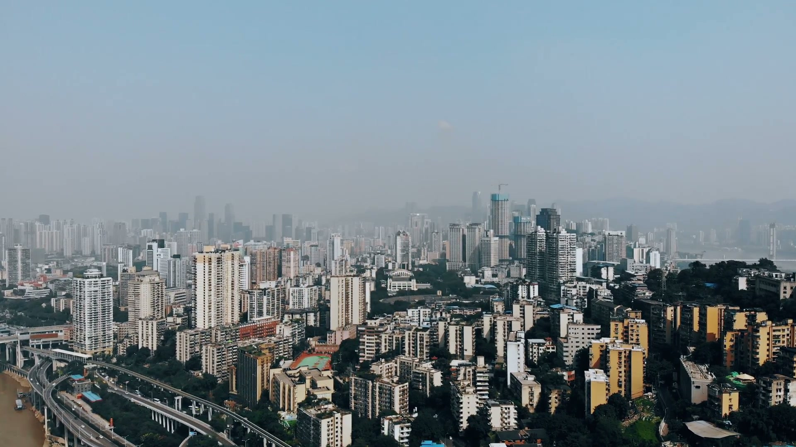

Chongqing-Rail-Tunnel
Last updated: July 2026

I've been coming to Chongqing for years, and every time I step off the train at Chongqing North, I feel like I'm walking into a city that refuses to play by normal rules. Buildings stack on top of buildings. The light rail runs through the 19th floor of a residential tower. And under all of it, the Yangtze River just keeps rolling east, waiting for the next challenge.
Turns out, that next challenge just got conquered.
Chongqing's Caiyuanba High-Speed Rail Tunnel — a 14.4-kilometer underground passage that dives under the Yangtze River — was fully bored through on July 22, 2026. It's the first high-speed rail tunnel ever to cross the Yangtze, and it's a big deal for anyone who's ever spent hours crawling through the mountains between Chengdu and Chongqing.
What Makes This Tunnel Different
There are plenty of tunnels under the Yangtze. Subway lines use them. Road tunnels exist. But a high-speed rail tunnel? That's a different animal. Bullet trains need wider bores, gentler curves, and stricter slope limits than slower trains. When you're also diving under one of China's biggest rivers, the margin for error shrinks to almost nothing.
The Caiyuanba tunnel runs from Chongqing's revamped Chongqing Station (the old Caiyuanba site) northward, threading its way through 6.6 kilometers of urban underground before hitting the river section. At its deepest point, the tunnel sits about 60 meters below the Yangtze riverbed — deep enough to avoid the tricky karst limestone that makes Chongqing's geology a nightmare for engineers.
The Boring Details (Literally)
The project used a tunnel boring machine — basically an underground monster that chews through rock at a few meters per day. The machine handled everything from hard sandstone to the fractured limestone zones that sit under the river. Workers monitored real-time pressure data around the clock, adjusting the TBM's speed and cutterhead torque every time the geology shifted.
Total construction took around 15 months. For the river-crossing section alone, the TBM spent nearly 5 months under the water, advancing at an average of 6 to 8 meters per day.
Why Chongqing
Chongqing sits on a peculiar piece of geography. It's built on hills, surrounded by rivers, and underlain by limestone that loves to dissolve into caves and sinkholes. Building anything here is hard. Building a high-speed rail tunnel under its biggest river is borderline insane.
But Chongqing has always been like this. The city's first light rail line — Line 2 — famously cuts through a residential building at Liziba station. The Chaotianmen Bridge spans 932 meters across the Yangtze. And now, a high-speed rail tunnel joins the list of things people said couldn't be done in Chongqing but got done anyway.
What This Means for Travel
Once the tunnel opens to passenger service (expected in late 2027 after track-laying and testing), the travel time from Chongqing Station to Chongqing East will shrink from 25 minutes by car to under 5 minutes by train. The bigger win? It's part of the Chongqing High-Speed Rail Hub project — a master plan to funnel multiple high-speed rail lines through a single downtown station. That means faster connections from Chongqing to Chengdu, Xi'an, Guiyang, and beyond.
The View from the Other Side
I went down to the riverbank near the tunnel's southern portal last week. The skyline across the water was already lit up — Nan'an district's office towers glowing orange against the dusk. A Yangtze River cruise boat chugged past, its speakers blasting pop music. No one on board had any idea that 60 meters below the water, a tunnel big enough for a bullet train had just been finished.
That's kind of Chongqing's thing. Huge things happen here, and if you blink, you miss them. But if you slow down — walk the riverside, eat some hotpot in an alley off Jiefangbei — you start to feel it. The city is building itself into something else, one impossible tunnel at a time.
---
*Cover image: Chongqing's skyline from Nan'an district. The Caiyuanba tunnel runs underneath the Yangtze directly below this view.*
Produced by Deep in China — Go deeper than any tourist ever goes.